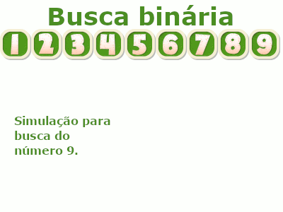

50%
A busca binária é um algoritmo simples porém bastante eficiente, que faz uso do conceito dividir para conquistar para encontrar o valor a ser buscado.
Ela possui um pré requisito, que é receber como entrada uma lista de dados previamente ordenada.
Isso se faz necessário porque a busca binária segue dividindo uma lista ao meio, seguindo a busca apenas na metade a qual o elemento a ser encontrado poderá estar.
Devido a essa estratégia, conseguimos realizar a busca em ordem logarítmica O(log n), que nos permite realizar buscas mesmo em uma lista com grande quantidade de dados com uma performance bastante satisfatória.
Em sua implementação utilizamos um único laço while para iterar sob os items da lista, verificando e seguindo a cada iteração pela metade que pode conter o elemento procurado.
Seu retorno será o índice da posição do elemento procurado na lista, ou "-1" caso ele não seja encontrado.
Vamos ver através da animação a seguir como esse algoritmo se comporta:

Para você aprender a implementar um algoritmo de busca binária, vamos criar uma classe contendo sua implementação, e na sequência vamos entender o código fonte do mesmo.
Para isso crie um arquivo chamado BuscaBinaria.java com o seguinte código:
public class BuscaBinaria {
/**
* Implementação do algoritmo de busca binária.
* A busca binária possui performance de ordem O(log n).
* Ela parte do princípio de que receberá uma lista ordenada.
*
* @param numeros - lista contendo os números utilizados para a busca.
* @param numero - número a ser encontrado na lista.
*
* @return int - índice do número na lista, ou -1 caso não encontrado.
*/
public int buscar(int[] numeros, int numero) {
int indice = -1;
if (numeros == null) {
return indice;
}
int inicio = 0;
int meio;
int fim = numeros.length - 1;
while (inicio <= fim) {
meio = (inicio + fim) / 2;
if (numeros[meio] < numero) {
inicio = meio + 1;
} else if (numeros[meio] > numero) {
fim = meio - 1;
} else if (numeros[meio] == numero) {
indice = meio;
break;
}
}
return indice;
}
}
O código acima é simples de entender, mas vamos a uma explicação do mesmo:
Agora que você já entendeu como o algoritmo de busca binária funciona e é implementado, vamos criar uma classe de testes para validar sua implementação.
Essa classe de teste utiliza como base o framework JUnit para sua execução.
Para implementá-la, crie o arquivo BuscaBinariaTest.java com o seguinte código (que será explicado na sequência):
import org.junit.Test;
import static org.junit.Assert.assertEquals;
public class BuscaBinariaTest {
private static final int[] LISTA_NUMEROS = { 1, 2, 3, 5, 6, 9, 10, 20, 40, 100 };
private static final int NUMERO_PRESENTE_LISTA = 10;
private static final int NUMERO_NAO_PRESENTE_LISTA = 50;
private static final int INDICE_NUMERO_EX_LISTA = 6;
private static final int INDICE_NAO_ENCONTRADO = -1;
private final BuscaBinaria buscaBinaria = new BuscaBinaria();
@Test
public void listaNulaTest() {
int indice = buscaBinaria.buscar(null, NUMERO_PRESENTE_LISTA);
assertEquals(INDICE_NAO_ENCONTRADO, indice);
}
@Test
public void listaVaziaTest() {
int indice = buscaBinaria.buscar(new int[0], NUMERO_PRESENTE_LISTA);
assertEquals(INDICE_NAO_ENCONTRADO, indice);
}
@Test
public void buscaComSucessoPrimeiraPosicaoTest() {
int primeiroNumeroLista = LISTA_NUMEROS[0];
int indice = buscaBinaria.buscar(LISTA_NUMEROS, primeiroNumeroLista);
assertEquals(0, indice);
}
@Test
public void buscaComSucessoTest() {
int indice = buscaBinaria.buscar(LISTA_NUMEROS, NUMERO_PRESENTE_LISTA);
assertEquals(INDICE_NUMERO_EX_LISTA, indice);
}
@Test
public void buscaComSucessoUltimaPosicaoTest() {
int indiceUltimoNumeroLista = LISTA_NUMEROS.length - 1;
int ultimoNumeroLista = LISTA_NUMEROS[indiceUltimoNumeroLista];
int indice = buscaBinaria.buscar(LISTA_NUMEROS, ultimoNumeroLista);
assertEquals(indiceUltimoNumeroLista, indice);
}
@Test
public void elementoNaoEncontrado() {
int indice = buscaBinaria.buscar(LISTA_NUMEROS, NUMERO_NAO_PRESENTE_LISTA);
assertEquals(INDICE_NAO_ENCONTRADO, indice);
}
}
O código acima é bastante intuitivo. Ele inicia com a definição de algumas constantes que serão utilizadas nos testes, assim como a criação de uma instância da classe BuscaBinaria criada anteriormente.
Na sequência criamos uma série de métodos anotados com a anotação @Test, que representam os casos de testes no framework JUnit.
Os nomes dos métodos são bem descritivos, e informam exatamente o que está sendo testado.
Dentro de cada método fazemos uma chamada ao nosso método de busca, armazemando o seu valor de retorno.
Por fim, com o auxílio do assertEquals do JUnit, verificamos se o retorno da busca possui o mesmo valor do valor esperado.